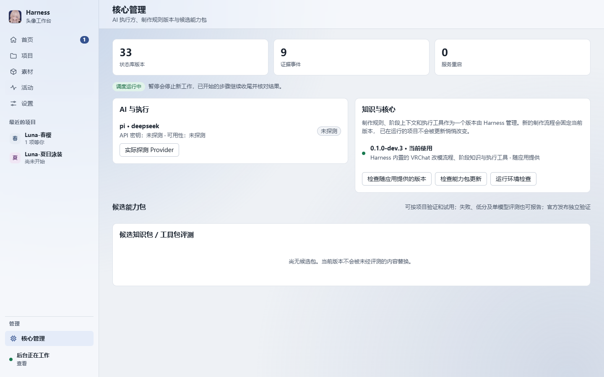

目录

问题：AI 说「做完了」，意味着什么 #
让 AI 改一个 VRChat 头像，最常见的失败不是它做不出来，而是它说做完了、看起来也像做完了，但装到工程里一测就不对：菜单少了一档，参数位数超了，材质换错了槽。执行者的自述和结果之间隔着一层，谁来填这层？
通常的答案是「用户自己检查」。这在一次两次可以，在十六个阶段、每个阶段几十个检查点的正式流程里不可能。Harness 的答案是把三件事从执行者手里拿走：规则、判定和放行。
「完成」不该是执行者的自述，而应是观测者的结论。
三个机制 #
三个机制按顺序作用在同一条流程上：开工时冻结规则，每一步由独立观测判定，关键节点由你放行。
1. 冻结流程 #
开工的那一刻，这次任务用到的流程定义、工具与知识按哈希冻结。之后即使能力包更新了，正在进行的流程也继续用开工时的那一套。这样做的原因很朴素：如果规则会在中途变化，那么「判定通过」就没有稳定的含义。
- 冻结的对象是三样：流程定义（有哪些阶段、每个阶段检查什么）、工具（用什么来做和来看）、知识（做法与约束）。
- 冻结的凭据是哈希。判定记录里带着它，事后可以回答「当时是按哪一版规则判的」。
- 冻结不阻止更新：能力包由服务端签名发布，客户端验签后在安全点更新，旧流程保持冻结。
更新发生在安全点，作用于之后开工的流程。正在进行的流程不会被半路换掉规则。
2. 独立判定 #
每一步完成后，由独立观测给出判定：去看工程里真实的状态，和阶段定义里的期望比对，而不是读取执行方的汇报。执行方可以在汇报里写「已完成」，但这个字段不参与判定。
判定失败时，流程不会直接停下，也不会无限重试：执行方带着证据返工，次数有限。证据是判定时留下的观测结果——截图、日志、数值——返工时它们是输入，而不是从头再猜。
判定记录里有什么
下面是一条判定记录的示意。字段是为了说明用途而写的，不代表实际存储格式。
# 示意：一步的判定记录。字段用于说明，不代表实际格式。
stage: 06-menu # 阶段：菜单
attempt: 2 / 3 # 有限次数返工
frozen:
workflow: sha256:9f3a… # 开工时冻结的流程定义
tools: sha256:41c0…
knowledge: sha256:b7d2…
observations:
- check: menu.controls_count
expected: 8
actual: 8
- check: expression_parameters.bits
expected: "<= 256"
actual: 214
verdict: pass
evidence: [renders/menu-01.png, logs/menu-check.txt]
gate: user_approval_required # 关键节点：等待批准三个字段值得注意：frozen 让判定可以追溯到规则版本；observations 是观测到的事实，不是执行方的说法；evidence 是返工时要带上的东西。
这也是为什么执行方在沙箱里运行、工作区以外的写入被阻止：观测对象必须只在工作区里，判定才有意义。
3. 人工闸门 #
有些决定不该由判定规则替你做：方案要不要这样走，配色是不是你要的，交付包能不能发出去。这些是关键节点，流程会停下来请你批准，批准之后再继续。
- 流程到达关键节点，Harness 把当前状态和判定结果摆在你面前。
- 你批准，或者要求改。
- 批准后流程继续；要求改则回到执行方，带着你的意见。

批准之前，流程停在那里。Harness 的控制接口、配置与 BOOTH 会话对执行方不可见，所以执行方无法替你按下批准。
一次返工长什么样 #
用菜单阶段举一个示意的例子：第一次尝试超出了参数位数预算，判定未通过；执行方拿着参数表截图和检查日志返工，第二次通过，进入闸门等待批准。
| 尝试 | 判定 | 证据 | 处理 |
|---|---|---|---|
| 1 / 3 | 未通过 参数位数超出预算 | 参数表截图、检查日志 | 带证据返工 |
| 2 / 3 | 通过 8 个控件，214 位 | 参数表截图 | 进入闸门，等待批准 |
整个过程里，规则没有变（哈希相同），判定方式没有变（同一组观测），变的只有执行方交出来的工程状态。这就是「可以被验证」的含义：任何一步都能回答按什么规则、看到了什么、谁放行的。
取舍 #
这套做法不是免费的，几处取舍写在这里：
- 更慢。每一步多一次观测，关键节点要等你。换来的是不用在交付后返工。
- 返工有限。次数用完就停下来找你，而不是无限重试。无限重试掩盖问题，还烧额度。
- 规则会过时。冻结意味着正在进行的流程用不上刚发布的改进。所以更新只在安全点生效，下一次开工就能用上。
还没做的事 #
以下内容规划中，尚未实现，不属于当前提供 Windows 的开发版：
- 规划中 Windows GUI（将成为主入口）
- 规划中 实时预览
- 规划中 游戏轮盘菜单编排
- 规划中 交互捏脸
- 规划中 服务端检索与推荐
协作学习目前是自愿加入、按类别回传最小候选、可随时退出；接收端尚未开放。
关于本文 #
这是一篇示例文章，同时是本站博客与开发日志的模板：标题层级（h1–h4）、正文、引用、代码块、图注、提示框、表格与目录都在这一页里出现过一次。产品事实以产品页为准；文中标注「示意」的内容用于说明机制，不代表实际数据格式。